【小白攻略】敌对生物之僵尸篇
2019-12-03 作者：矮人
大家好！这里是喜欢捕捉小怪兽的攻略君！在上一次的攻略中，我成功捕捉了最常见的五个坏家伙，并且向大家介绍了其中的两种，现在，我将会为大家继续介绍这几个坏家伙，普及一下他们的习性以及特点，好让大家在日后的居家生活中能够从这几个坏家伙手中保护自己。
现在，让我们了解一下本次要介绍的这些坏家伙吧！他们就是最常见也是最危险的亲密敌人！僵尸！
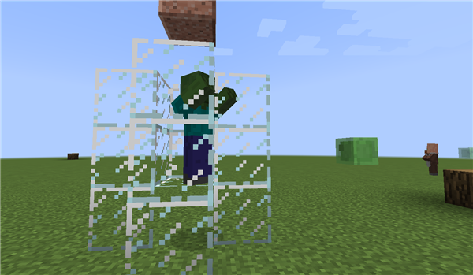似乎有点远，让我们凑近一点瞧瞧。
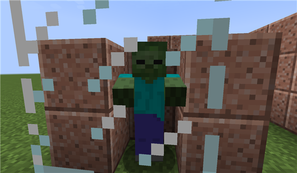僵尸有着和我们近似的穿着，不过皮肤是暗绿色的，也是我们最常见的敌对生物之一，他们在没有发现生者的时候漫无目的的游荡，在发现猎物的时候一哄而上，偶尔还会集合起来袭击村庄。他们有着与玩家相同的生命值，随难度上升的攻击力还有亡灵特性——这导致他们会被治疗喷溅药水所伤害，还会因为阳光而被点燃。
僵尸往往是我们在夜晚碰到的第一个坏家伙。好在他们行动迟缓，而且攻击范围比我们稍微短那么一点——这导致了只要我们在攻击的时候保持一定的拉扯距离，就可以轻松的击败他们，娴熟的冒险家甚至可以不凭借任何工具，赤手空拳就可以无伤的打败他们。
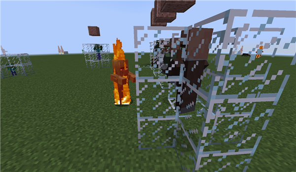被阳光点燃的村民僵尸
当然，还有那些危险的小僵尸，可不要因为它们小就轻视它们！他们不会因为阳光而被灼伤，甚至还会高速移动，往往我们还会因为他的快速移动和迷你的身材而难以击中它，若不是出现率较低，要不然可是我们非常难缠的敌人呢。
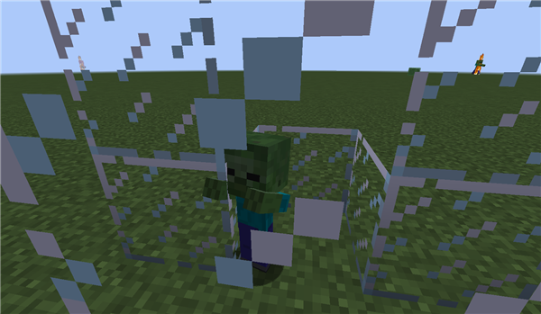从近处观察的小僵尸
不知道小伙伴们身处村庄的时候有没有注意过，有些僵尸会趴在村民的房门前，死死盯着屋内的村民，而对路过的你视而不见，而其他坏家伙，比如说骷髅，爬行者则依然会对你紧追不舍。这就是要介绍的第一个特性，僵尸会主动对村庄发动袭击，并且在追击村民的时候会忽视你，除非玩家主动攻击他。
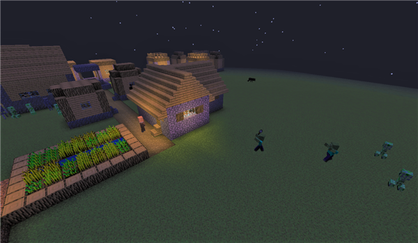在夜晚向村庄发动袭击的僵尸群，有趣的是，只有僵尸对村民有着极强的执念
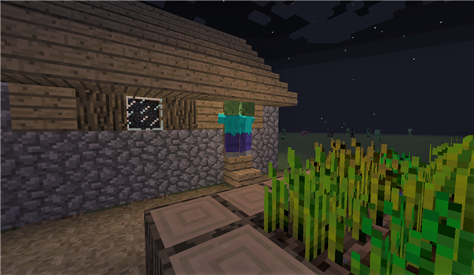试图击碎村民家大门的僵尸，如果难度设置为困难，他们就有可能打碎木门。
特别值得一提的是，僵尸可不仅仅会攻击村民们的房屋，有时他们也会试图对你所居住的房屋发动袭击，不过僵尸的碎门能力与难度直接挂钩，只有当难度设置为困难的时候，僵尸才有可能把木门打碎——而且不论什么难度，僵尸都不会把铁门打碎。
当然，这些僵尸的袭击是有原因的，只要村民丧命于他们的手中，就会有可能被转化成为僵尸村民。为了更好的说明，在这里做了个小小的装置用于观察村民与僵尸的转化。
这就是要介绍的第二点特性，僵尸的传染性。
我们请来了数位村民，把他们同一只僵尸关押在一起。
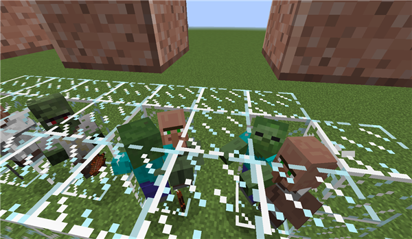果不其然，僵尸立刻对村民发动了攻击。
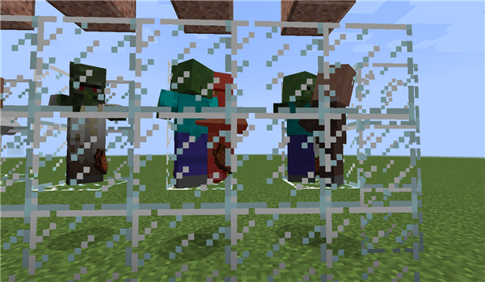 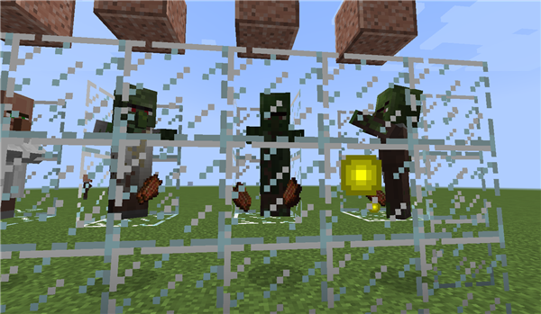我们持续观察一段时间，直到村民被僵尸击败为止。可以观察到村民已经被转化为了僵尸，而且身上还穿着之前自己对应职业的服装。
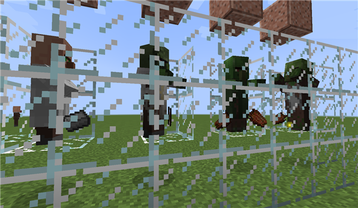如果自己的村庄里有村民被僵尸袭击而转化成了新的僵尸该怎么办？不要慌，虽然他们现在失去了理智，但这并不是不可挽回的，只需要一点点药水，我们就可以清除这些村民体内的僵尸因子。
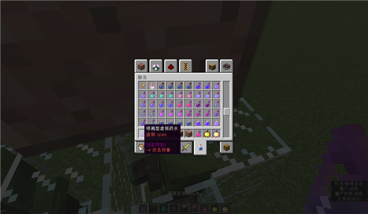首先，我们需要准备一种任意效果的喷溅药水，随后准备任意品质的金苹果。
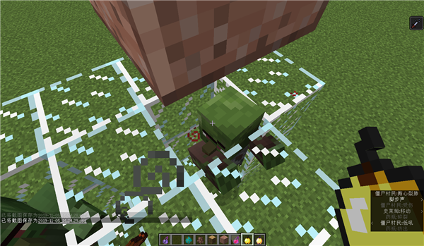对着我们的僵尸村民喂下金苹果。
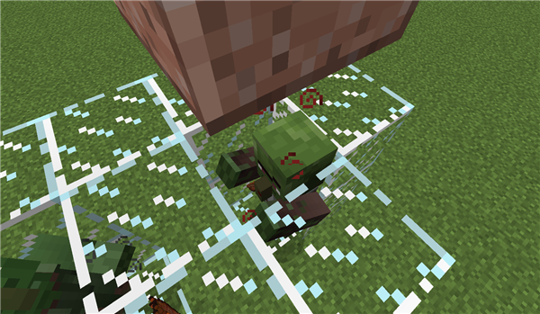如果这一步骤成功了，那么僵尸村民应该会颤抖，并且身上出现暗红色的粒子。这一阶段会持续很久时间，因此我们先将其他僵尸进行治愈。
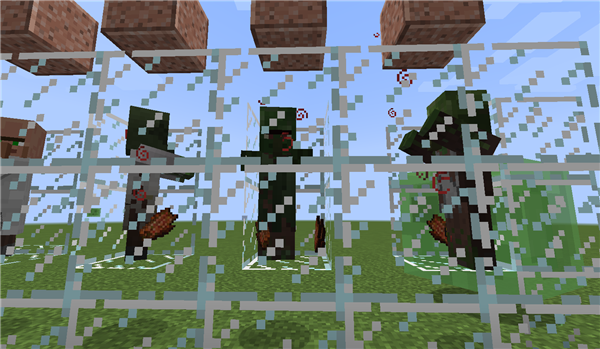 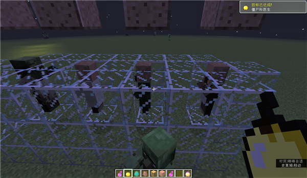经过一段时间之后，这些村民就会回到正常的样子啦！同时我们还可以解锁一个成就“僵尸科医生”！不过需要注意的是，即使在治愈过程中，这些僵尸村民也是会袭击其他村民，因此隔离是必要的！
最后，就是第三个特性，僵尸会捡起物品，并且把它们穿戴上去！
我们偶尔会看到一些僵尸手持物品游荡，可不要认为它们只是捡起来玩玩而已。它们会将自己捡起来的道具直接装备起来，并且获得对应的护甲值/攻击力。
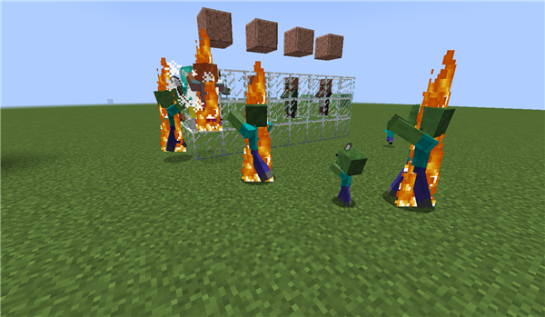手持铁剑的小僵尸
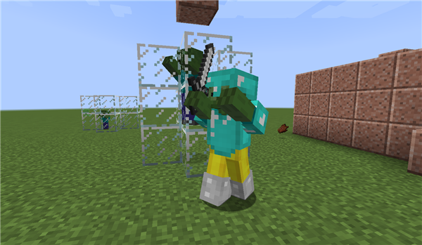一个装备了全套护甲的僵尸
除此之外，如果僵尸穿戴了头盔，那么它会免疫阳光对其的灼烧。此外，如果它们装备的是生成时自带的装备，那么死亡时只会概率掉落，如果是后期捡到的装备，那么当该僵尸死的时候会必定掉落。因此，面对这种全副武装的僵尸的时候，是走是留还是要看各位冒险家小伙伴决定，毕竟收益伴随着风险。
以上便是本次攻略的全部内容，不知道诸位小伙伴是否更好的了解了僵尸这一敌对生物呢？在下一次攻略中我们将会讲述其他剩下的生物的情况，敬请期待！